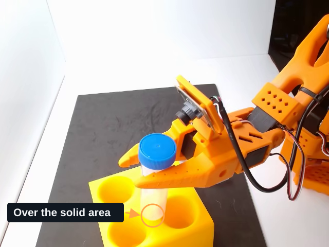
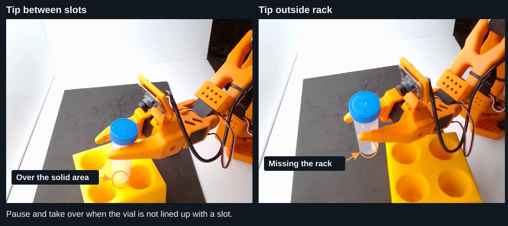

Sim-to-Real 전략 3: HG-DAgger로 Correction 학습#

이 Module에 필요한 준비물
이론 수업입니다. Robot이나 실행 중인 container는 필요하지 않습니다.
Policy가 vial에 접근해도 grasp를 놓치거나 lift 전에 멈출 수 있습니다. 이번 session에서는 어려운 상황에서 human correction으로 policy를 개선하는 방법을 배웁니다.
학습 목표#
Human correction이 유용한 training example을 추가하는 방식 설명
HG-DAgger란?#
HG-DAgger는 Human-Gated Dataset Aggregation의 약자입니다. Policy의 task 시도를 보다가 도움이 필요할 때 제어권을 가져와 motion을 수정하고 다시 돌려줍니다. Grasp 실패처럼 policy가 스스로 도달한 상황에서 무엇을 해야 하는지 가르칩니다. HG-DAgger paper
Workshop 도구는 별도 fine-tuning run에 사용할 correction을 기록합니다. 수집 중에는 policy weight가 바뀌지 않습니다.
HG-DAgger와 Reinforcement Learning의 차이
둘 다 초기 학습 이후 policy를 개선할 수 있지만 feedback이 다릅니다.
방법 |
학습용 Feedback |
|---|---|
HG-DAgger |
Policy에 도움이 필요한 state에서 사람이 action target을 제공합니다. Correction은 supervised training example이 됩니다. |
Reinforcement learning (RL) |
Reward signal로 행동을 평가하고, 시간이 지남에 따라 더 큰 reward를 얻는 action을 학습합니다. |
이 실습은 별도 training run용 human correction을 수집하며 RL training loop를 실행하지 않습니다.
Correction이 도움이 되는 이유#
Demonstration은 익숙한 task 수행 방법을 보여줍니다. 작은 error로 policy가 거의 보지 못한 state에 진입할 수 있으며, human correction은 그 상황의 recovery 예시를 추가합니다.
Label을 선택해 demonstration에서 recovery로의 흐름을 보세요. 아래 경로는 arm의 물리적 motion이 아닌 robot state입니다. 여기서 초록은 human correction이며, 뒤의 recording interface는 별도의 control-status 색상을 사용합니다.
진행 방법#
Policy 시도를 관찰하고, grasp 후 lift하지 못하는 등 반복되는 실패를 찾습니다.
Policy를 pause하고 leader와 follower를 정렬합니다.
Leader로 motion을 수정합니다. 예를 들어 vial을 mat에서 충분히 들어 올리는 동작을 보여줍니다.
Correction을 저장하고 policy에 제어권을 돌려줍니다. 한 rollout에서 여러 번 반복할 수 있습니다.
원래 demonstration 일부와 correction을 혼합해 policy를 fine-tune합니다.
갱신된 policy를 개입 없이 평가하고 남은 실패로 다음 수집 round를 계획합니다.
Operator가 제어권을 가져오는 시점을 보세요. 이 recording에서 초록은 policy control, 빨강은 leader를 사용한 human correction입니다.
제어권 전환 관찰#
짧은 rollout clip에서 policy pause, leader 정렬, human correction을 확인합니다. Operator가 개입할 때 control status와 recording indicator를 보세요. 정상 속도로 재생됩니다.
Dataset 예시: Correction만 저장#
이 vial placement dataset은 저장한 human correction만 포함합니다. Episode는 operator 개입부터 correction 저장까지이며 자율 동작 구간은 포함하지 않습니다.
DATASET · SO-101 · Human corrections
Vial Placement Corrections
Human interventions recorded on the physical robot
29 correction segmentsReal robot · About 118 seconds total
Corrections only—not complete policy rollouts or full task demonstrations.
LeRobot v3 · 3,544 frames · 30 FPS · External + wrist cameras at 640 × 480
Joint states and action targets recorded during human control
개입할 시점#
Gripper뿐 아니라 vial tip을 보세요. 다음 external-camera frame은 저장된 두 correction의 시작을 보여줍니다.

Correction 시작 시 placement 오류: slot 사이(episode 0), rack 밖(episode 10)#
Tip이 rack의 막힌 부분 위에 있을 때: Slot 사이로 누르기 전에 pause합니다.
Tip이 rack 밖에 있을 때: 제어권을 가져와 slot 위로 이동시킵니다.
Tip이 rack에 닿았지만 들어가지 않을 때: 계속 누르도록 두지 말고 pause합니다.
Policy를 pause하고 leader와 follower를 정렬한 뒤 placement를 수정합니다. 정지 image는 misalignment를 보여주므로 실제 contact는 live motion과 두 camera view로 판단하세요.
External camera의 짧은 correction episode 세 개를 보세요. 모두 정상 속도로 재생됩니다.


GR00T 학습 방식을 떠올려 보세요: 전체 task가 없는 몇 초짜리 correction도 왜 도움이 될까요?
짧은 Correction이 도움이 되는 이유
GR00T는 episode에서 sampling한 observation/action window로 학습합니다. Observation은 camera image, robot state, task instruction을 제공하고 이어지는 action은 target이 됩니다. 짧은 correction도 vial과 rack slot을 맞추는 등 어려운 순간에 필요한 여러 window를 제공할 수 있습니다.
모든 예시가 vial pickup부터 시작할 필요는 없습니다. 짧은 segment는 전체 task demonstration에 특정 recovery 예시를 추가합니다. 관련 없는 correction이 같은 window에 연결되지 않도록 episode 경계를 유지하세요.
Baseline과 Correction 학습 비교#
왼쪽 baseline policy와 오른쪽 HG-DAgger policy를 비교하세요. Approach, grasp, placement 중 어디서 행동이 달라지나요?
다음 단계
목차 순서에 따라 다음 페이지로 이동하세요: HG-DAgger: Correction 수집.